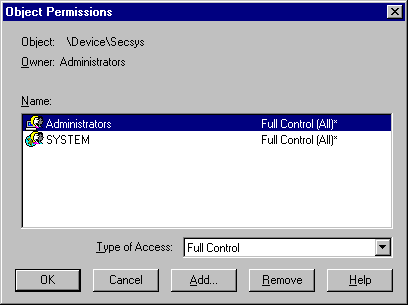

Device Object Security
Introduction
The Windows NT DDK has very little security-related information, documenting only four functions (SeAccessCheck, SeAssignSecurity, SeDeassignSecurity, and SeSinglePrivilegeCheck). Its most glaring omission, however, is related to device objects. Nowhere in the DDK does it state what default permissions are applied to device objects upon their creation. The vast majority of device driver developers assume that the "appropriate" permissions are enabled, or don't realize that securing device objects is an issue at all. When I integrated WinObj V2.0 with NT's security editors, a brief tour through the \device object directory showed me that overlooking device object security could inadvertently open security holes. The vast majority of device objects created have the following permissions: Everyone:Read/Write (R/W) (the Everyone built-in Security Identifier -SID - is also known as the World SID), System:Full Access, and Administrator:Full Access. Only Microsoft's file server and file redirector (LanManServer and LanManRedirector) objects omit Everyone:Write and just allow Everyone:Read, and physical disks are protected because the device object directory in which they're located, \device\harddiskxxx, omit Everyone:R/W.
While it makes sense for some objects to have Everyone:R/W, allowing any account to read and write to most devices is not acceptable. Having R/W not only enables an account to perform ReadFile and WriteFile on devices, but execute any device-defined I/O control requests as well. For example, a disk controller that can be directly accessed by a malicious user or Guest could prove disastrous. The release of Microsoft Terminal Server (Hydra), which makes NT a multi-user system, heightens the risk of potential device security breaches.
IoCreateDevice
Why does Everyone:R/W show up on most device objects? Because IoCreateDevice, the kernel-mode API used to create device objects, assigns the permissions I list above as default permissions - its up to a device driver to adjust the permissions if necessary, like SRV and RDR obviously do. Unfortunately, the NT DDK does not document the kernel-mode functions necessary to remove an Access Control Entry (ACE), like the one that grants Everyone read and write access, from a device object's Discretionary Access Control List (DACL). Microsoft has been made aware of this deficiency, and will be creating and documenting new kernel-mode APIs for NT 5.0 that will make it easy to create device objects without weak protection. I'll present these new APIs here when they are available.
Fortunately, the mapping between Win32 security APIs and kernel-mode security APIs is fairly straight-forward. This has enabled me to implement a function, NTIRemoveWorldAce, for use in your own device drivers. This function and its support routines, demonstrated in the secsys sample driver, will fully secure your device objects. Its implementation also serves to show the use of kernel-mode security functions in kernel mode. SecDemo The SecDemo program fully demonstrates default object security and the use of NTIRemoveWorldAce. The program consists of the SecDemo Win32 console program and the SecSys device driver. To see the NTIRemoveWorldAce API remove Everyone:R/W run SecDemo. It will load SecSys, which creates a device object named "\device\secsys" using IoCreateDevice . The program then pauses in order to give you an opportunity to view its default permissions. To do so, start Winobj, navigate to the \device directory, and double-click on "secsys". Then go to the "Security" tab in the Object Properties dialog box that appears and select "Permissions". You'll see the following security information, which includes Everyone:R/W:

After you have seen IoCreateDevice's default permissions, press return to let Secdemo continue. It sends an I/O control to the secsys driver that invokes NTIRemoveWorldAce and pauses again to let you view \device\secsys's updated permissions. Close the secsys Object Properties dialog and double-click on secsys again. When you view its permissions at this point you'll see this:
Now only members of the built-in Administrators group and the System (Win32 Services and the NT Kernel) will be able to read, write or send IOCTLs to the secsys device object.
Inside NTIRemoveWorldAce
I've thoroughly documented the implementation of NTIRemoveWorldAce, so I'll only provide an overview here. My discussion assumes familiarity with NT's security model and Win32 security APIs.
NTIRemoveWorldAce is prototyped as follows:
NTIRemoveWorldAce( PSECURITY_DESCRIPTOR OriginalDescriptor, PSECURITY_DESCRIPTOR *UpdatedDescriptor );
A device object's security descriptor is stored in DeviceObject->SecurityDescriptor, so secsys uses the API as follows:
NTIRemoveWorldAce( Device->SecurityDescriptor, &Device->SecurityDescriptor );
NTIRemoveWorldAce first takes the device object's security descriptor, which is in self-relative form, and creates an equivalent security descriptor in absolute form so that the descriptor can be easily manipulated. The support function NTIMakeAbsoluteSD accomplishes this. NTIMakeAbsoluteSD makes use of the following kernel-mode security APIs to create and fill in the absolute security descriptor:
- RtlCreateSecurityDescriptor
- RtlGetDaclSecurityDescriptor
- RtlSetDaclSecurityDescriptor
- RtlGetOwnerSecurityDescriptor
- RtlSetOwnerSecurityDescriptor
- RtlGetGroupSecurityDescriptor
- RtlSetGroupSecurityDescriptor
- RtlValidSecurityDescriptor
I've included prototypes to all these functions, as well as the others used in the sample, in secsys.h. Next to each prototype I list the functions' equivalent Win32 security API (e.g., RtlValidSecurityDescriptor's equivalent is IsValidSecurityDescriptor), so you can refer to the Win32 SDK's documentation for details on how to use them.
NTIRemoveWorldAce obtains a pointer to the absolute descriptor using RtlGetDaclSecurityDescriptor and then initializes a Security Identifier (SID) that represents the built-in World account. The APIs called upon for this operation include:
- RtlLengthRequiredSid
- RtlInitializeSid
- RtlSubAuthoritySid
Next, NTIRemoveWorldAce marches through the DACL's ACE's, searching for one that has the World SID in it. Win32 programs can use GetAce to retrieve a particular ACE from an ACL, but this function is not implemented in kernel-mode. I therefore call my own implementation of GetAce, NTIGetAce, to retrieve pointers to each ACE in the ACL. Using RtlEqualSid I test the SID in an ACE for a match against the World SID that I've initialized. When a match occurs I call NTIDeleteAce, which implements the functionality of the Win32 function DeleteAce. Like GetAce, there is no kernel-mode equivalent provided by NT for DeleteAce.
The subsequent steps are to apply the updated DACL to the security descriptor with RtlSetDaclSecurityDescriptor, and to convert the security descriptor back to relative form via RtlAbsoluteToSelfRelativeSD. Finally, the passed in device object security descriptor is deallocated with ExFreePool, and the pointer to receive the new security descriptor (in the case of secsys, the device object's security descriptor pointer) is set to point to the new security descriptor.
Closing Comments
So is it safe to use these APIs given that they are undocumented? The answer is yes, at least through NT V5.0. There are several reasons to feel safe when using them:
- there is a direct correlation between documented Win32 APIs and their kernel-mode equivalents, down to their identical parameter lists
- Microsoft's own drivers make use of these APIs (otherwise they would not be exported)
- they have existed in all released versions of NT
In this article and sample program I've only scratched the surface of kernel-mode security APIs and their uses. I'll describe other device driver uses for security, such as privilege checking, protecting private objects, and detecting user access, in an upcoming Dr. Dobb's Journal. The article will also provide a header file, ntsec.h, that I've compiled to include all kernel-mode security APIs, their prototypes, their Win32-equivalents, as well as typedefs and definitions required to use the APIs.
Download SecDemo (44KB)
Download SecDemo Plus Source (101KB)